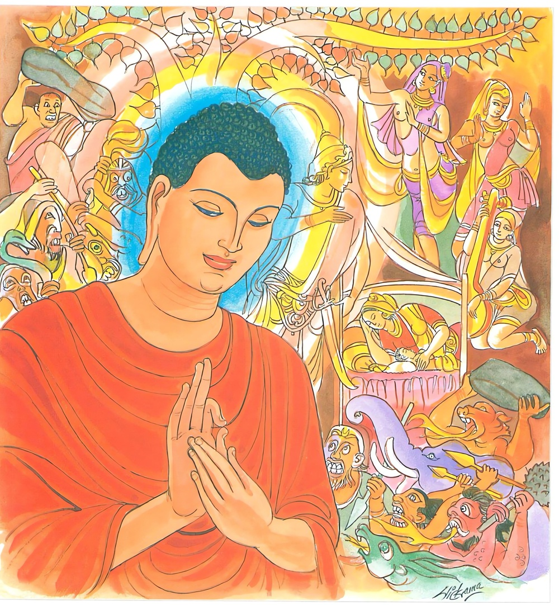

24-9 උපක ආජීවක
මෙම කතාව ධම්මපද අටුවාවෙන් ද කියවන්න.
සබ්බාභිභූ සබ්බවිදූ’හමස්මි
සබ්බෙසු ධම්මෙසු අනූපලිත්තො
සබ්බඤ්ජහො තණ්හක්ඛයෙ විමුත්තො
සයං අභිඤ්ඤාය කමුද්දිසෙය්යං.
මම් සියලු (ත්රෛභූමක) ධර්මයන් මැඩැලූයෙම් වෙමි. සියලු (චාතුර්භූමක) ධර්මයන් දන්නෙම් වෙමි. සියලු (ත්රෛභූමක) ධර්මයන්හි (තෘෂ්ණදෘෂ්ටිලේපයෙන්) අනුපලිප්තයෙමි. (නො ඇලිනිමි.) සියලු (ත්රෛභූමක) ධර්ම පහ කොට සිටියෙමි. තෘෂ්ණාක්ෂයයෙහි (රහත් පෙලෙහි) (අශෛක්ෂ විමුක්තියෙන්) මිදුනෙමි. ඒ මම් (චතුස්සත්යයන්) තෙමේ ම ප්රත්යක්ෂ කොට දැන අන් කවරක්හු නම් සිය ගුරුහු කොට කියම් ද?

බුදුරජානන් වහන්සේ අධිගතසර්වඥතාඥානය ඇති සේක් බෝමැඩ සත්සති ගෙවා පාසිවුරු ගෙන දම්සක් පවත්වනු පිණිස බරණැස බලා නික්මුනු සේක. අටළොස් යොදුන් මගට පිළිපන් බුදුරජානන් වහන්සේ අතර මග දී මගැ එන උපක ආජීවකයා දුටු සේක. උපක ද බුදුරජුන් දැක “ඇවැත්නි! තමුන්නාන්සේගේ ඇස් කන් නාස් ඈ ඉඳුරෝ ඉතා පහන්හ, සිරුරු සිවිය ඉතා පිරිසිදු ය! කාන්තිමත් ය, ඉතාකදිම ය, ඇවැත්නි! තමුන්නාන්සේගේ පැවිද්ද කා උදෙසා ද? කවුරුන් වෙත පැවිදි වූ වහු ද? ශාස්තෘ කවුරු ද? කවරක්හුගේ ධර්මය රුස්නහු දැ” යි විචාළේ ය. එවිට බුදුරජානන් වහන්සේ “මට උපාද්ධ්යායයෙක් නැත, ආචාර්ය්යයෙක් නැතැ”යි වදාරා මේ ධර්මදේශනාව කළ සේක.
සබ්බාභිභූ සබ්බවිධූහමස්මි
සබ්බෙසු ධම්මෙසු අනූපලිත්තො,
සබ්බඤ්ජහො තණ්හක්කයෙ විමුත්තො
සයං අභිඤ්ඤාය කමුද්දිසෙය්යන්ති.
මම සියල්ල මැඩලූයෙම් සියල්ල දන්නෙම් සියලු ධර්මයන්හි නො ඇලුනෙම් සියලු ධර්මයන් බැහැර කෙළෙම් අර්හත්ඵලයෙහි විමුක්තයෙම් වෙමි. (ඒ මම) තෙමේ සියලු ධර්මයන් දැන කවරක්හු උදෙසම් ද.
සබ්බාභිභු = කාමාවචර - රූපාවචර - අරූපාවචර යන සියලු ත්රෛභූමකධර්මයන් මුළුමනින් යටපත් කොට සිටියේ ය.
සබ්බවිදූ = දන්නාලද සියලු කාමාවචර - රූපාවචර - අරූපාවචර - ලෝකෝත්තරධර්ම ඇතියේ ය.
සබ්බෙසු ධම්මෙසු න උපලිත්තො = සියලු ත්රෛභූමකධර්මයන්හි තෘෂ්ණාදෘෂ්ටි වශයෙන් නො ඇලුනෙම් වෙමි.
සබ්බඤ්ඤහො = සියලු ත්රෛභූමකධර්මයන් හැර සිටියෙම් වෙමි.
තණ්හක්ඛයෙ විමුත්තො = අර්හත්ඵලයෙහි, මිදුනෙම් වෙමි.
‘තණ්හක්ඛයවිමුත්ත’ නම්: මෙහි තෘෂ්ණාක්ෂය යි කින ද අර්හනමාර්ගයාගේ අවසානයෙහි නිපද වූ බැවින් අර්හත්ඵලය ද තෘෂ්ණාක්ෂය යි කියනු ලැබේ. ඒ මේ අර්හත්ඵලයෙහි අර්හත්ඵල විමුක්තියෙන් මිදී සිටියේ ය. “තණ්හක්ඛයෙන්තෙ උප්පාදිතෙ තණ්හක්ඛයසඞ්කාතෙ අරහත්තෙ අසෙක්කාය විමුත්තියා විමුත්තො” යනු අටුවා.
සයං අභිඤ්ඤාය කං උද්දිසෙය්යං - (මම) තෙමේ දැන කවරක්හු උදෙසම් ද.
මම ම අභිඥෙය්යාදිප්රභේද විසින් දතයුතු වූ සිවු සස්දහම් විශිෂ්ටඥානයෙන් දැන සිටිනෙම් අන් කවරක්හු මාගේ උපාද්ධ්යායයා කොට මාගේ ආචාර්ය්යයා කොට දක්වම් ද. එබන්දෙක් මට නැත.
මෙහිලා බුදුරජානන් වහන්සේ මෙසේ ද වදාළ සේක:-
“න මෙ ආචරියො අත්ථි සදිසො මෙ න විජ්ජති,
සදෙවකස්මිං ලොකස්මිං නත්ථි මෙ පටිපුග්ගලො”
මට ලෝකෝත්තරධර්මයෙහි ඇදුරෙක්නැත. මට සමානයෙක් විද්යමාන නො වේ. දෙවියන් සහිත ලෝකයෙහි මාහට සම පුද්ගලයෙක් නැත.
“අහං හි අරහා ලොකෙ අහං සත්ථා අනුත්තරො,
එකො’ම්හි සම්මාසම්බුද්ධො සීතිභූතොස්මි නිබ්බුතො”
ලෝකයෙහි මම රහත් වෙමි. මම ම නිරුත්තර වූ ශාස්තෘ වෙමි. මම ම සම්යක්සම්බුද්ධ වෙමි. (සියලු කෙලෙස්ගිනි නිවීමෙන්) සිහිල් වූ යෙමි. එහෙයින් ම නිවුනෙමි.
“මාදිසා වෙ ජිතා හොන්ති යෙ පත්තා ආසවක්ඛයං,
ජිතා මෙ පාපකාධම්මා තස්මාහං උපාකා ජිනො”
යම් කෙනෙක් කාමාදී ආස්රවයන් ක්ෂය කිරීමට පැමිණියෝ ද මා වැනි ඔවුහු ‘ජින’ නම් වෙති. උපකය! මා විසින් පාපධර්මයෝ දිනනලදහ. එහෙයින් මම ජින නම් වෙමි, යනු අරුත්.
ධර්මදේශනාවගේ අවසානයෙහි උපක තෙමේ බුදුරජුන්ගේ බසට නො ද සතුටු ව නො ද පිළිකෙව් කොට හිස සොළොවා දිව ඇද දක්වා අඩිපාරක් දිගේ ගොස් වැදිගෙදරකට වන්නේ ය.
උපකාජීවක වස්තුව නිමි.